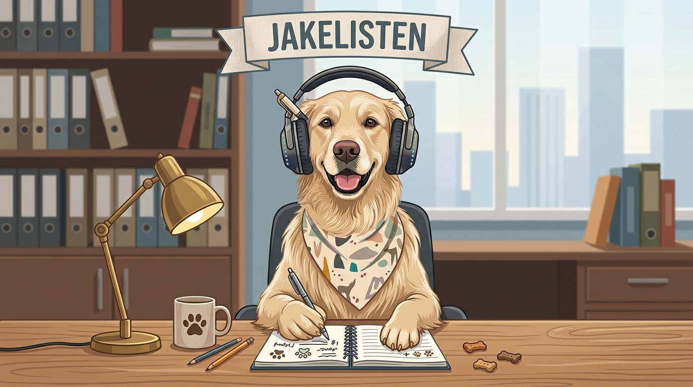

JakeListen quietly records both sides of a call, transcribes it with speaker names, and hands you a tidy summary the moment you hang up. No virtual audio driver, no faff.
macOS 14.2+ · Bring your own Gemini key · MIT licensed

good boy 🦴Every single line of JakeListen was written by AI: the CLI, the Swift audio helper, the Mac app, the installer, and this exact website you're reading. A human pointed and nudged; the AI typed all of it. We're putting that right up front because you deserve to know what you're running. It works, it's open source, and you can read every line yourself. No human-made polish, no false claims, just honest robot output.
Jake sits in, listens to both sides, and gives you back a clean transcript and summary the second the call ends.
Your mic via ffmpeg, everyone else via macOS Core Audio process taps. No virtual audio driver or Multi-Output Device to wrestle with.
Each side is transcribed on its own and merged by timestamp, so "Me" vs. everyone else stays reliably separated.
A short recap with participants, key points, decisions, and action items, ready to paste into Slack.
Recordings are chunked, transcribed in parallel, de-duplicated across overlaps, and silence-trimmed so it never loops.
Optionally drop the summary straight into the channel of your choice as soon as the call wraps.
Audio, transcripts, and summaries stay on your disk. Nothing personal is hard-coded; your name and jargon live in local config.
JakeListen runs on your own Google Gemini API key instead of routing your calls through someone else's server. Grabbing one is free and takes about a minute, and it means you stay in full control.
Start and stop from the menu bar, then browse every past call with its summary and transcript in one window. The GUI drives the same CLI under the hood.
The menu-bar popover: one click to start or stop.
Grab a free Gemini key, run the installer, and you're set. It builds the audio helper and walks you through the one-time macOS permission.
Homebrew, then brew install node ffmpeg and the Xcode Command Line Tools.
./install.sh builds the helper, links the command, and asks for your Gemini key.
Grant system-audio recording from Terminal.app. That's the whole setup.
Run jakelisten, take your call, press Return. Transcript + summary appear.
# Download the latest release, then from the JakeListen folder: ./install.sh # Record a call (press Return to stop and process) jakelisten # Prefer a GUI? Build the menu-bar app: cd mac-app && ./build.sh --run